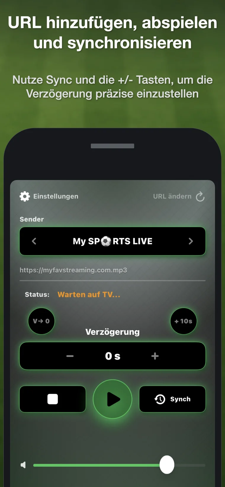
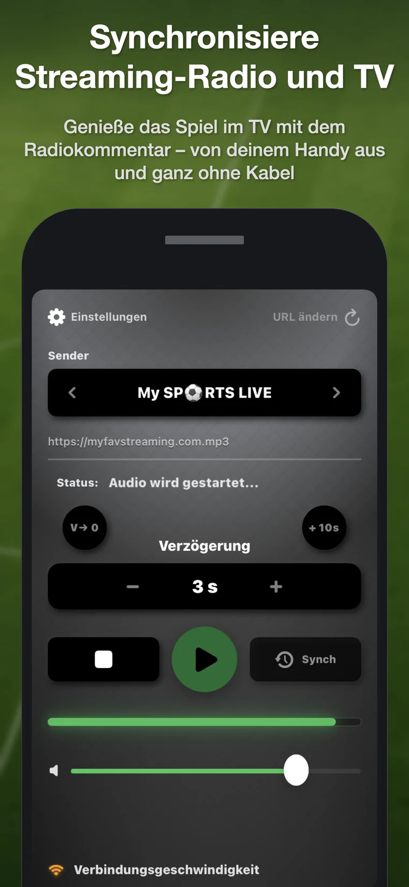
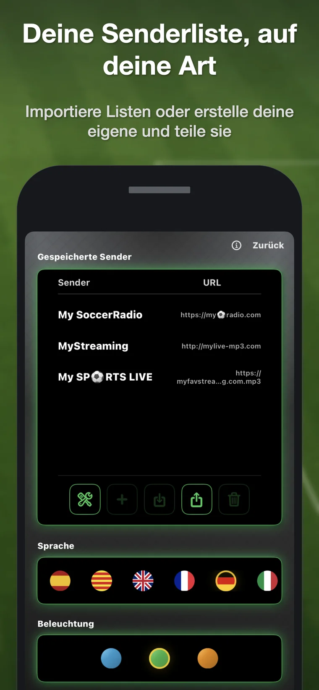

1. Sender hinzufügen
Füge eine kompatible direkte Stream-URL hinzu oder importiere eine TXT-, M3U- oder JSON-Senderliste.
Soccer RadioTv Sync verzögert einen kompatiblen Online-Radiostream direkt auf dem iPhone, damit der Kommentar zum Fernsehbild passt, wenn die Streaming-Latenz das Radio vorauslaufen lässt.

Wenn eine Sportübertragung per Streaming auf dem Fernseher ankommt, kann das Bild mehrere Sekunden hinter dem Radiokommentar liegen. Man hört das Tor, bevor man es sieht. Soccer RadioTv Sync bringt das klassische Erlebnis zurück: das Spiel im TV sehen und dabei den bevorzugten Radiokommentar hören.
Füge eine kompatible direkte Stream-URL hinzu oder importiere eine TXT-, M3U- oder JSON-Senderliste.
Tippe bei einer erkennbaren Szene im Radio auf Sync und erneut, wenn dieselbe Szene im TV erscheint.
Die App berechnet die Verzögerung automatisch. Mit + und – lässt sie sich präzise anpassen.
Normalerweise werden nur etwa 10–40 Sekunden benötigt, bei Bedarf steht aber mehr Spielraum zur Verfügung.
Höre weiter, wenn das iPhone gesperrt ist oder während du andere Apps benutzt.
Speichere mehrere Stream-URLs für denselben Sender und wechsle bei unterschiedlicher Latenz.
Für stabile Wiedergabe ohne umständliches Desktop-Setup entwickelt.
Erstelle, importiere, exportiere und teile TXT-, M3U- und JSON-Listen.
Für ein internationales Publikum lokalisiert, darunter Deutsch, Englisch, Spanisch und Italienisch.
Es gibt spezielle Verzögerungsradios, doch sie benötigen zusätzliche Hardware und sind meist deutlich teurer. DIY-Lösungen mit Computer, Kabeln oder VLC können funktionieren, sind während eines Spiels aber umständlich. Soccer RadioTv Sync läuft auf dem iPhone, das du ohnehin dabeihast, und arbeitet mit Internetstreams – sowohl von klassischen Sendern mit Online-Stream als auch von reinen Internetradios ohne AM- oder FM-Frequenz.
Die aktuelle Version enthält keine vorinstallierten Sender. Du fügst eine kompatible direkte Stream-URL hinzu oder importierst eine Liste. Dadurch bleibt die App international und unabhängig von einem bestimmten Anbieter. Eine einfachere Sendersuche befindet sich in Entwicklung.


Ja. Soccer RadioTv Sync spielt einen kompatiblen Online-Radiostream ab und wendet die einstellbare Verzögerung direkt auf dem iPhone an.
Tippe bei einer erkennbaren Szene im Radio auf Sync und erneut, wenn sie im TV erscheint. Die App berechnet die Verzögerung; mit + und – kannst du sie fein einstellen.
Sie funktioniert mit kompatiblen direkten Stream-URLs. Die aktuelle Version enthält keine Sender; du fügst eine URL hinzu oder importierst eine Liste.
Sie arbeitet mit Internetstreams. Dazu gehören klassische Sender mit Online-Stream und reine Internetradios ohne AM- oder FM-Frequenz.
Sie ist für Situationen gedacht, in denen der Radiokommentar vor dem TV-Bild ankommt – häufig durch Streaming-Latenz beim Fernsehen.
Nein. Die aktuelle Version ist ein Einmalkauf, ohne Werbung und ohne Benutzerkonto.
Der erste Prototyp lief privat auf einem MacBook von 2013 und nutzte bereits den Ringpuffer-Kern des Synchronisierungssystems. Nach Monaten persönlicher Nutzung überzeugten Freunde Alfonso davon, daraus eine iPhone-App zu machen – denn niemand wollte für den Radiokommentar während eines Spiels den Laptop hervorholen.